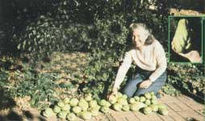

Any home gardener who likes to experiment with new and unusual varieties of vegetables should try growing chayote vines. They're easy to grow, have a high yield of savory and nutritious fruit, and really aren't new at all, but were a favorite crop of the ancient Aztecs and are still grown by many present-day Mexicans.
I had assumed - when I was introduced to the squash-like treat while on vacation in Mexico - that the chayote was a tropical product to be enjoyed only south of the border. Therefore, I was delighted, upon my return home, to find the fruit in our California supermarket. (It'd probably been there all along, and I just hadn't noticed it.)
I found out, too, that these Mexican fruits, which the Aztecs called chayotli, are now widely grown in tropical and subtropical areas around the world. They are known as christophine or mirliton to Caribbeans, chocho to Madeirans, pipinella to Italians, and pipinola to Hawaiians. (The plant's scientific name is Sechium edule, but most North Americans call them "vegetable pears.")
Being a home gardener myself, I wanted to grow my own "patch" of chayote, and wondered if they'd survive in California's central valley. A little research soon told me that my area's climate would suit the import well. The vine requires a 150-day growing season (between hard frosts) and is planted occasionally in gardens across the southern United States. (A light winter frost kills back the greenery, but doesn't destroy the roots, which - come spring - send up new plants. And in even more northerly areas, the vegetable pear can sometimes be grown as an annual, or be wintered over in a greenhouse.)
In the course of my studies, I also discovered that the almond-sized chayote seed can't be dried and saved for planting: It germinates only inside the fruit - and will often do so while still on the vine - so the seed must be planted with its fleshy "shell" intact. The vegetable pear grower's first step, then, is to locate a market (try an area with a large Spanish-speaking population) where chayote is sold in the late fall. (It doesn't matter if the fruit has been in cold storage and plastic-wrapped.) Buy several . . . put them away in a dark, cool (not frosty) place . . . and wait. The seed sprout will emerge and lengthen in the darkness. By February it should be approximately six inches long.
Then, if your area - like most parts of North America - isn't yet frost-free, put the sprouted chayote in a pot with the tip of the new growth just peeping out of the soil. Set it in a sunny window, keep it watered, and plant it outdoors once the weather is warm enough. (Should you live in a zone, like ours, that usually stays above freezing in February, you can simply plant the germinated fruit wherever you want it to grow.)
I found the Mexican import to be a rapidly growing climber . . . forming a sturdy vine that crawled up and over anything near it and was soon covered with elegant, five-pointed, sandpapery leaves. Our two creepers were started on a trellis against the garage, and - when the vines reached the top - they spread across the roof (and helped keep the building cool). Fortunately, the plants didn't take up any of our small and valuable garden space . . . however, we had oak trees near the garage and learned the hard way that - unless directed with ties and such - chayotes go right on up any vertical support available! (When harvest time arrived, we had to "make like squirrels" in order to pick the highest fruits.)
A vine will continue to grow all summer and may attain a length of 30 feet or more before it starts to blossom. The productive plant needs a thorough, deep watering at least once every week and - if the weather is hot and dry - should be mulched to help conserve moisture.
When the days begin to shorten noticeably (September in southern California, and August farther north), sprays of green blossoms appear . . . but they're so nearly the color of the leaves that you may not even notice them. Then, sometime in October (when you've probably just about given up hope), the plant will suddenly be covered with green fruit . . . and will keep on producing until the earliest frost.
My first harvest taught me why chayote vines are typically hefty. The fruits are heavy. . . often weighing a pound or more apiece. And there are lots of them! In fact, a single plant may bear between 50 and 100 in a season, and it's estimated that one hectare (2.47 acres) of Sechium edule will produce 120,000 fruits a year!
You can begin picking your crop at any stage. At one to two inches in diameter, young chayote make good pickles or relish. When they're two-thirds grown, they can be served sliced, like cucumbers, into salads. Later still, the nearly ripe fruit will be delicious curried or stir-fried . . . or used to liven up soups or stews. My favorite recipe, however, is also simplest of all: Just boil the slices for ten minutes ... season them with salt, pepper, and herbs . . . and serve them with butter.
After they're fully mature (the skins will have become rather hard), you can boil or steam the "pears" and mash their "innards" like potatoes . . . cut them in half and bake them just as you would winter squash ... or stuff the edible "bowls" with seasoned meat and cooked rice and then roast them in a medium oven (about 325°F) until tender. I have even served chayote "candied yams" alongside the Thanksgiving turkey.
Our vines were still loaded with fruit when the first frost hit. By the following morning the plants' luxuriant leaves were suddenly crumpled, and I thought it was the end of my first chayote crop. Not so! The remaining fruits hung in "cold storage" until I finally picked them. I found that they kept well (another definite advantage) when simply spread out on newspapers in the garage, and we were able to enjoy them until long after Christmas.
After the chayote had been harvested, I pulled down the vines and mulched the roots. (If your area's winters are fairly cold, you should mulch heavily.) The next year, new shoots popped up through the insulative layer and started the whole cycle all over again!
Maximino Martinez, author of the book Plantas Utiles de Mexico (Useful Plants of Mexico), says that after a vine is two years old, parts of the root can be harvested without killing the plant . . . since the belowground growth will then be very large and will have put out tubercles. If you cut some of these away, you should be able to garner even more food from your vines each year. The root is 20% high-quality starch, and is often used as a substitute for wheat products. (Chayote "potatoes" can also be peeled, boiled, steamed, or baked.)
The Many Culinary Uses of Chayote
There are a number of more exotic uses for chayote, as well. In the West Indies, for example, the vine's fibers are twined into strong ropes, and - in old-time Creole medicine - christophine herb tea was used as a curative for vascular diseases. (According to one botanist, "An infusion of leaves lowers blood pressure and is said to counteract arteriosclerosis with surprising results.")
Now I don't make rope very often, and I would surely hesitate to doctor a heart patient with chayote tea. But I have found that my two vines produce all the vegetable pears we can consume . . . with plenty left over to give away to friends and neighbors. And now that we've gotten our chayote garden started, our whole family is looking forward to many years of good eating!
|
 Learn to grow chayote, the delicious Mexican staple, for a fun and savory squash-like treat. |
|
|